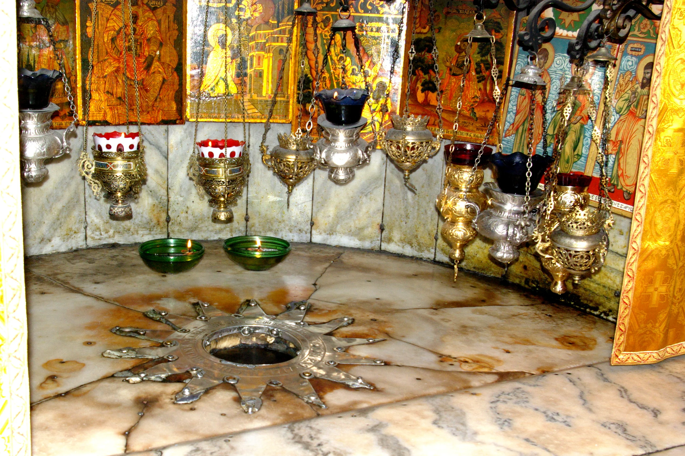
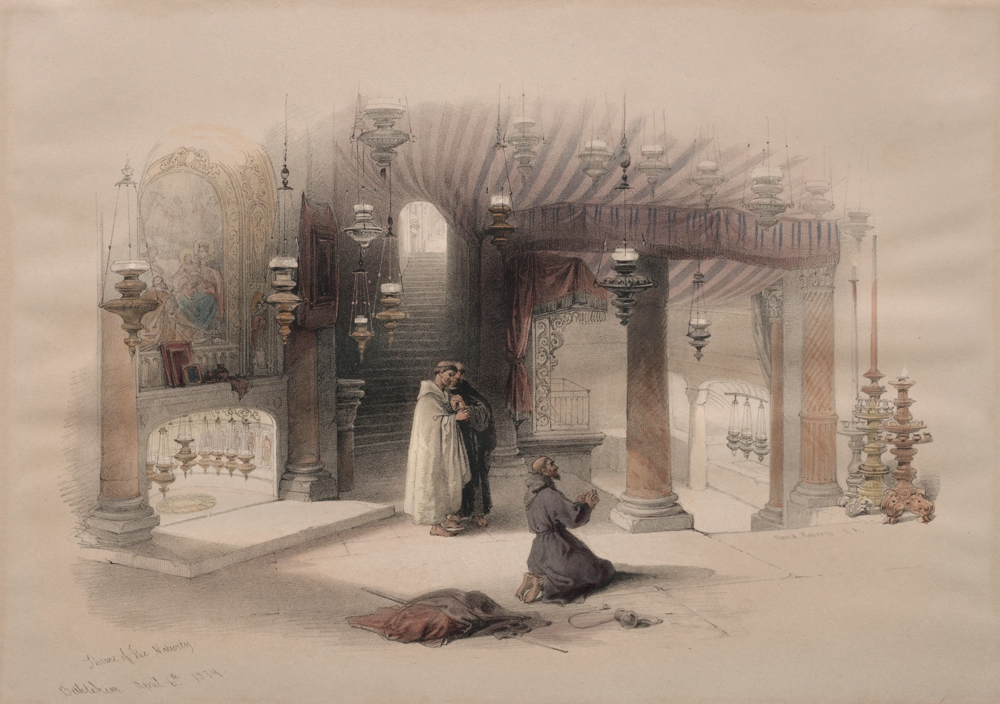
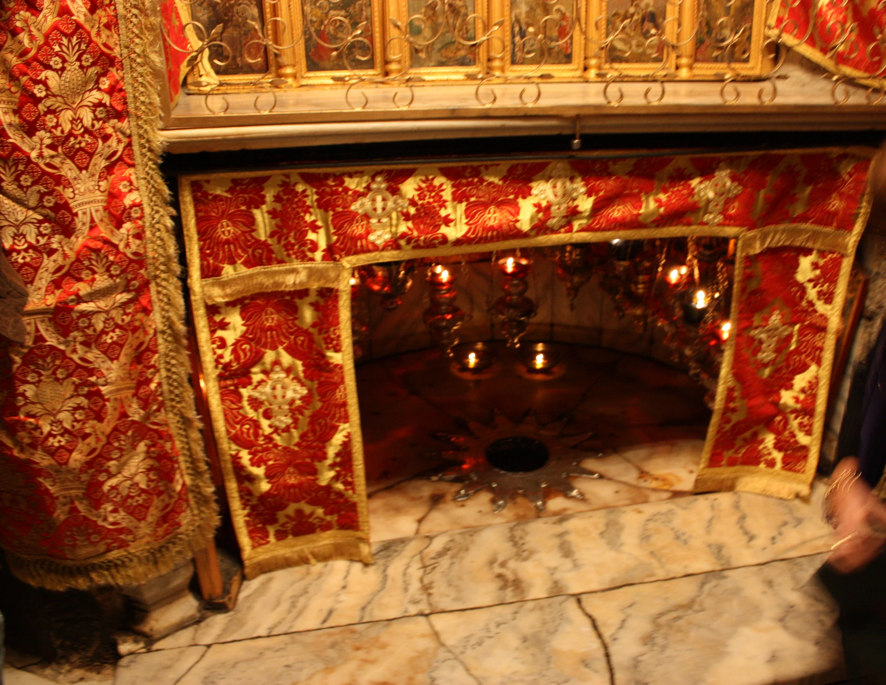

아직 펼치지 않은 카드
아직 펼치지 않은 카드
예수탄생교회의 큰 제단 밑에는 길이 12m쯤 되는 동굴이 있어요. 그 한쪽 끝, 등잔이 매달린 낮은 벽감(벽을 우묵하게 파 들어간 자리) 바닥에 은빛 별이 박혀 있어요. 어두운 동굴을 등불로 비추며 별에 새긴 것들을 찾아보세요.
교회 아래 동굴로 내려가면 바닥에 은빛 별이 있어. 깜깜하니까 등불을 들고 같이 찾아보자!
검수 전 시안이에요(기준서 1판). 장면에는 기록에 있는 것만 옮겼고, 전해지는 이야기는 그렇다고 밝혔어요. 상상은 ‘눈 감고 상상해 보기’에만 썼어요.
1700년대 끝 무렵 화가 루이지 마이어(1755~1803)가 그린 탄생 동굴이에요. 낮은 바위 천장에 등잔이 줄지어 매달려 있고, 왼쪽 환한 벽감 앞에 사람들이 무릎을 꿇거나 엎드려 있어요.
이 동굴을 예수가 태어난 곳으로 기억한 기록은 아주 오래되었어요. 2세기 중반 순교자 유스티노는, 요셉이 마을에서 묵을 곳을 찾지 못해 마을 가까운 동굴에 머물렀고 거기서 마리아가 아기를 낳았다고 썼어요.
3세기 학자 오리게네스는, 베들레헴에서는 그분이 태어난 동굴과 동굴 속 구유를 보여 준다고 적었어요. 그리스도인의 믿음을 반대하는 사람들까지 알 만큼 널리 이야기된다고 덧붙였어요.
339년, 이 동굴 위에 첫 교회를 지어 하나님께 바쳤어요(봉헌). 그때 순례자가 들어오도록 동굴을 넓혔고, 지금은 바위에 대리석을 덧대어 길이 12m쯤, 너비 3m쯤의 길쭉한 방처럼 보여요.
아주 옛날에 그린 동굴 그림이야. 천장에 등잔이 주렁주렁 매달려 있지?
물어보기사람들은 왜 이 동굴에 와서 무릎을 꿇었을까?
계단을 내려가면 동굴 한쪽 끝, 동굴 안 작은 제단(탄생 제단) 바로 밑에 반원 모양의 낮은 벽감이 있어요. 그 흰 대리석 바닥에 꼭짓점이 14개인 은빛 별이 박혀 있어요.
동굴은 등잔 불빛으로 밝혀요. 등불을 들고 바닥을 비추며 별에 새긴 것들을 찾아보세요.
손가락이나 마우스로 문질러 동굴 바닥을 비춰 보세요.

탄생 동굴의 은빛 별, 2008년 · 사진: Berthold Werner · 퍼블릭 도메인 · 위키미디어 공용
빛이 닿으면 숨은 표시가 나타나요.
등잔 아래 은빛 별을 다 비춰 보았어요. 이 별은 1847년에 한 번 사라진 적이 있어요.
깜깜한 동굴이야. 등불을 들고 바닥을 비춰 볼까?
물어보기별의 꼭짓점은 몇 개일까? 같이 세어 보자.
두 그림은 같은 자리를 그렸어요. 계단 왼쪽, 등잔이 매달린 벽감 바닥에 별이 있어요. 1839년 4월 6일 날짜가 적힌 데이비드 로버츠의 그림과, 1881년 책에 실린 판화예요. 아래 ‘1839년 · 1881년’ 단추를 눌러 두 그림을 견주어 보세요. 1839년 그림은 별이 사라지기 전, 1881년 판화는 새 별을 단 뒤예요.
첫 별은 1717년 가톨릭 쪽이 놓았어요. 40년쯤 뒤, 힘이 더 커진 그리스 정교회 쪽이 이 제단을 맡게 되었어요. 1847년 가을 어느 아침, 기도하러 동굴에 내려온 가톨릭 성직자들이 별이 없어진 것을 알았어요.


가톨릭 쪽은 그리스 정교회 수도사들이 떼어 갔다고 했고, 정교회 쪽은 가톨릭이 싸움을 걸려고 스스로 떼어 갔다고 맞섰어요. 날을 세운 까닭은 별에 새긴 라틴어 글이었어요. 이 땅에서는 가톨릭을 ‘라틴’이라고도 불러서, 라틴어 글이 동굴의 주인을 가톨릭으로 보이게 했거든요. 다툼은 가톨릭 편의 프랑스와 정교회 편의 러시아로까지 번졌어요.
1852년 2월, 그때 이 땅을 다스리던 오스만 제국의 술탄(임금)은 칙령(임금의 명령)을 내려 예수탄생교회와 동굴을 ‘지금 모습대로’ 두라고 했어요. 1853년, 같은 라틴어 글과 ‘1717’을 새긴 새 별이 다시 바닥에 박혔어요. 성지를 둘러싼 이 다툼은 그해 10월 시작된 크림 전쟁(1853~1856년, 러시아와 영국 · 프랑스 · 오스만 제국이 싸운 전쟁)의 여러 까닭 가운데 하나로 꼽혀요.
옛날 그림 두 장이야. 계단 왼쪽, 등잔 밑 바닥을 봐. 별이 있던 자리야.
물어보기별이 없어졌을 때, 사람들은 왜 그렇게 다투었을까?
오늘 이 동굴은 그리스 정교회가 돌보고, 별 위의 등잔 15개는 세 교회가 나누어 맡아요. 그리스 정교회가 6개, 아르메니아 사도교회가 5개, 가톨릭이 4개예요.
별 가까이, 조금 낮은 자리에는 구유 자리가 있어요. 그 맞은편에는 동방박사 경배 제단이 있어요. 동쪽에서 별을 보고 찾아온 박사들이 아기에게 절한 일을 기리는 제단으로, 가톨릭이 미사(가톨릭의 예배)를 드리는 곳이에요.

“이 모든 곳은 지금 모습대로 두어야 한다.”
오스만 술탄의 칙령, 1852년 2월 8일(영어 번역에서 옮김)
누가 어디를 맡는지는 이 칙령에서 이어진 ‘현상 유지(Status Quo)’ 약속으로 정해져 있어요. 1852년의 모습을 그대로 지키자는 세 교회의 약속으로, 지금도 지켜지고 있어요.
등잔 아래 별 둘레에는 지금도 그 라틴어 글이 새겨져 있어요. “여기서 동정녀 마리아에게서 예수 그리스도께서 나셨다.”
동굴에 내려왔어요. 무엇부터 해 볼까요?
지금도 별 위에 등잔이 반짝여. 가까이에는 아기 예수를 뉘었다는 구유 자리도 있어.
물어보기이 동굴에 간다면 무엇부터 보고 싶어?
눈 감고 상상해 보기
좁은 계단을 다 내려오면 공기가 따뜻하고, 기름 등잔 냄새가 나요. 낮은 천장 아래 사람들이 조용히 줄을 서 있어요. 내 차례가 되어 무릎을 꿇으면, 흔들리는 등잔 불빛에 은빛 별이 반짝여요. 누군가 아주 작은 소리로 노래를 불러요.
눈을 감아 봐. 계단을 내려가면 따뜻하고 조용한 동굴이야. 등잔 불빛 아래에서 은빛 별이 반짝반짝해. 누가 작은 목소리로 노래를 불러.
내 삶에서 ‘여기서 무언가가 시작됐다’고 표시하고 싶은 자리는 어디인가요?
네가 태어난 곳은 어디야? 거기에 별을 붙인다면 어떤 별일까?
마음에 닿는 한 줄을 고르거나 직접 써 보세요. 한 줄을 남기면 이 자리의 도장이 찍혀요. 이 기기에만 저장돼요.
이야기를 보다 궁금해질 만한 것들이에요. 답을 읽거나 짧은 영화로 보세요.
아직 펼치지 않은 이야기예요. 누르면 이야기가 펼쳐지고 색이 돌아와요. 더 알고 싶으면 근거를 따라가 보세요.
다 펼치면, 다음에 오실 때 새 이야기가 찾아와요.
오늘의 뒷이야기는 여기까지예요. 다음에 오시면 새 이야기가 기다리고 있어요.
펼친 뒷이야기 · 누르면 다시 볼 수 있어요
별이 사라진 달 1847년 10월로 적은 글(영어 위키백과 등)과 11월로 적은 글(타임스 오브 이스라엘, 2012)이 있어요.
누가 떼어 갔나 가톨릭 쪽은 그리스 정교회 수도사들을, 정교회 쪽은 가톨릭을 의심했어요. 론리 플래닛은 세 공동체가 서로를 탓했다고 적었어요. 누가 했는지 밝혀진 기록은 이 안내서가 찾지 못했어요.
새 별을 단 해 1853년(Fodor’s, 샬롱 교구 자료)으로 적은 곳이 많고, 1852년으로 적은 곳도 있어요(베들레헴시).
크림 전쟁과의 관계 브리태니커는 성지에서의 권리를 둘러싼 러시아와 프랑스의 다툼을 전쟁의 큰 까닭 가운데 하나로 보지만, 더 직접적인 까닭은 러시아가 오스만 제국에 한 요구로 봐요. 별 하나 때문에 전쟁이 났다고 말하기는 어려워요.
그리스도인들은 이 동굴을 성탄 이야기와 함께 읽어 왔어요. 말씀은 뜻만 옮기고, 본문은 대한성서공회 개역개정으로 이어 드려요.
누가복음 2장 6~7절 베들레헴에 있을 때 마리아가 첫아들을 낳아 강보로 싸서 구유에 뉘었다는 말씀이에요. 머물 곳이 없었다고 적혀 있어요.
미가 5장 2절 작은 고을 베들레헴에서 이스라엘을 다스릴 이가 나온다는 말씀이에요. 마태복음 2장이 이 말씀을 옮겨 적었어요.
확인한 날 · 2026년 11월 18일 · 바뀌기 쉬운 정보라 정기적으로 다시 확인해요
탄생 동굴은 예수탄생교회 안에 있어요. 제단 오른쪽(남쪽) 계단으로 내려가 왼쪽(북쪽) 계단으로 올라와요. 사람이 많은 때에는 동굴 앞에서 오래 줄을 설 수 있어요.
요르단강 서안 지역이라 떠나기 전에 외교부 해외안전여행 누리집에서 여행경보를 꼭 확인해요. 여는 시간은 바뀌기 쉬워서, 가기 전에 현지에서 다시 확인해 주세요.
‘등잔 아래의 별’에서 등불로 세 곳을 모두 찾으면 카드에 금박이 입혀져요.
둘 가운데 하나만 해도 카드가 채색돼요.
‘처음 만나는 기독교 문화’의 깊은 카드예요. 카드 단계와 남긴 글은 이 기기에만 저장돼요.
영화처럼 보기 · 약 3분
화면을 누르거나 → 키를 누르면 넘어가요. 그냥 두어도 자막이 저절로 넘어가요.